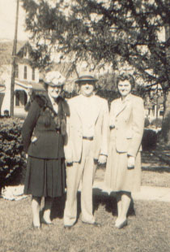

| Phyllis Ann Hofmann was born September 23rd, 1924. She met the love of her life, Bob Fortune, in middle school. Bob served in the Marines during WWII. After the war, on 20 April 1946, he finally married Phyllis. |
 |
|
|
Together they had two sons, Jay and Brett, and made their home in Bel Air, MD next door to Bob's sister and her family. |
| After their children were grown, Bob and Phyllis moved to Atlanta, GA to live closer to their sons and their families. Bob died in 1994 after a stroke. Phyllis continued to live in Atlanta and visit with her family until her own death March 22, 2012. |
|